Overview
Processes designed in another installation of ProcessMaker can be imported or exported into your installation. This procedure will only import the process definition (including DynaForms, Input and Output Documents and triggers) and group accounts, but will not import user accounts, roles, or any cases. If you need to transfer this extra information to your installation of ProcessMaker, see Backing up and Restoring ProcessMaker.
Importing a Process from ProcessMaker
Start with an existing Process
The easiest way to begin working with ProcessMaker is to import an existing process and adapt it to your needs. Click on the Import link and select an existing process to import. (Process files have a .pm extension.)
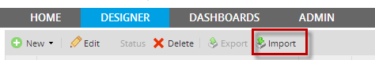
By clicking on Import a new window will display where the existing process must be browse from your computer.
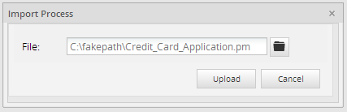
Importing an Existing Process inside ProcessMaker
If an existing process listed on the Main List of ProcessMaker wants to be imported, three options will be display as follows:

Where:
Update the current process, overwriting all tasks and steps
Import all including tasks, Dynaforms, Output and Input Documents without changing the ID of each one of them. Also users are still assigned into the tasks. This option is not recommended if you want to work with a complete new process without changing the current design, but it is useful if you want to run some tests on the update process. For example if two servers were installed, Development and Production, so every change and test must be run on the Development server, when all changes are finished Production server must be updated.
Disable the current process and create a new version of the process
It is strongly RECOMMENDED to use this option, that's why it will be chosen by default. If the requirement is to disable the current process, chose this option which create a new process including the date of the creation. For example if there is a process with cases but for some reason this process won't be used due to a new version of the process, choose this option to disable the first process and all cases with weren't finished can be finished but no one can start a new case.
Getting the Process UID
Before the process will be disabled get the Process UID of the current Process, let's work with Credit Card Application process, so use the Web Service Test, once you login into it look for the ProcessList Option, and click on the ProcessList button and all the process available for the current workspace will be displayed, look for the name of the process and copy the ID of it:

Once this is done import and select the option to disable the current process, a new process will be created as the image below:

Note: When this option is selected ProcessMaker will open the process automatically.
By creating this process the previous one will be disabled, so it will be no longer on the Process List, the new one will be listed with the structure_:
New - Process Name - Current Date:
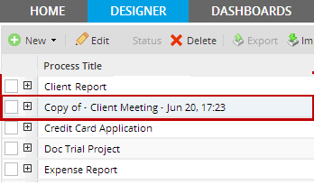
The Process UID as well as the Output, Input documents, and Dyanforms will change for new ones, So be careful if it is required to change or query some information of one of them inside the DataBase.
Activating the process
To activate the process, it is required to have the Process UID, go to the Database (if you have access to it), look for the name of your workspace and then go to the table PROCESS, it will display the information of the current process as well as the disable process:

Click on the link "Edit" and change the PRO_STATUS field to DISABLED to ACTIVATE:
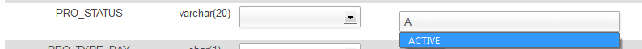
The go to the Process List, and refresh the view, the process will be listed, and the copy of it will be listed also:
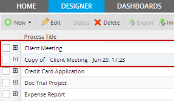
Since both of them are listed and ID's are different, it is possible to work on both of them.
Creating a new process without changing the current process
This option will create a new complete process with different IDS for Dynaforms, Outptut, Input Documents and tasks and no users assigned to tasks. For example if a process was finished it can be reused to personalize it with the structure of the original process.
The name of the process will be created with the following structure:
New - Process Name - Current Date:
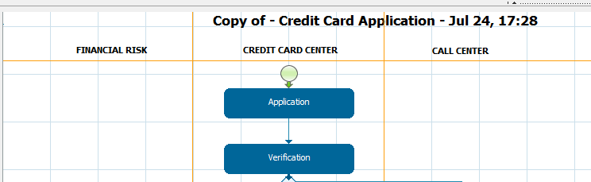
Importing a Process form the ProcessMaker Library
The ProcessMaker Library is a repository for sample process templates, where ProcessMaker users can browse, download, and import templates into their PM workspaces.
ProcessMaker Library was designed as a way for the ProcessMaker community to try out ProcessMaker workflows, get ideas for workflow designs, and see first-hand some of the advanced features that ProcessMaker offers.
Note: From version 2.5.0, ProcessMaker Library has been removed since processes were deprecated.
How to import a process from the library
Browse through the library to find processes to try out. Click on a process title to read a description and see information about the process.
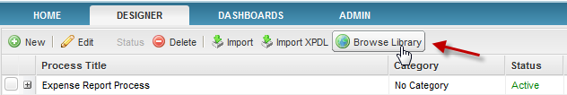
And select a process from the list.
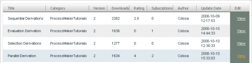
To download one of the processes, click on the View link to the right of the process. In the dialog box which provides information about the process, click on the Download at the bottom, to automatically download and import the library.

A brief information about the process will display:
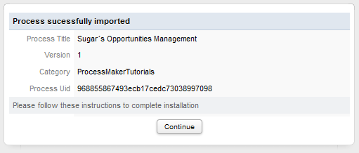
On the other hand, to download a some processes from the library, you will need to first login. If you don't already have an account with ProcessMaker, go to the "Sign In" section on the right side of the Library web page and click "Create a New Account". Enter your personal data and create password, then click on "Save" to be automatically logged in.
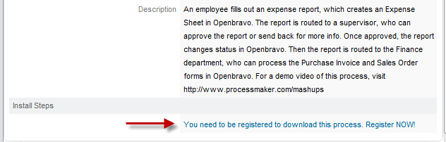
By clicking on this link the login screen will appear:
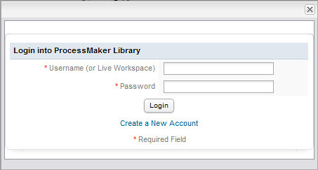
If you have registered in the ProcessMaker library, you need to enter your credentials to enable the download link; otherwise, click on Create a new Account to be redirected into the ProcessMaker Library page to create an account:
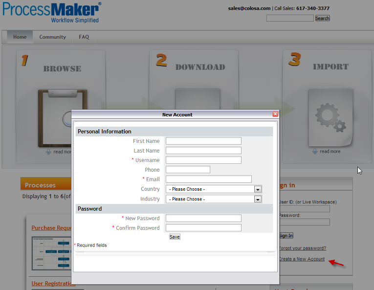
How to use an imported process
Before using an imported process, you will need to assign users to each task. User accounts are not imported or exported with a process! Create valid user accounts, and right-click on each task of the process map to assign users.
In some processes, a user group is already assigned to a task. In that case, you’ll need to assign your own users to that group. Under the users tab, create user accounts and assign them to the appropriate groups.
Once you've added valid users to tasks or groups, you can then run the process. Log in as the user assigned to the first task, and you’ll be able to start a case. Logging in with the user accounts you've assigned to the subsequent tasks, you can continue to run the process from the user side.
Summarizing this, as follows you will find ProcessMaker elements and configurations that are successfully exported and imported when a process is moving from one workspace/installation into another:
Elements imported/exported:
- Dynaforms
- Input Documents
- Output Documents
- Triggers
- Groups
- Groups assignment on each task
- Database Connections
- Case Scheduler configuration
- Events Configuration
- Tasks configuration
- email templates
Elements not imported/exported
- Users
- Process Permissions
- Process Supervisor
- PmTables (they need to be exported separately)
- Departments structure
- Users assignment on each task
Exporting Processes
From version 1.6 to 2.0.40
To export a process, go to the DESIGNER tab and select the desired process from the list and click its Edit link or double-click to open its Process Map. Right click on a blank area in the Process Map and select the option Export Process from the menu:
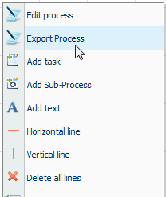
A dialog box will display the title of the process, description of the process, the size of the export file in bytes and a link to the file. Click on the link to download the export file to your computer.

If wishing to export the process to a different BPM application, download the download the .xpdl file. Note that ProcessMaker's support for the XPDL format is still beta.
From version 2.0.41 and later
- Export : From ProcessMaker 2.0.41 and on, the Export option was included under the Designer Menu, so it allows users to export a process directly without being inside one:
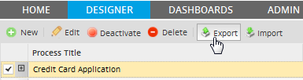
Users have also the export option explained from previous versions.
Note: More than one process can't be exported at the same time.
- Removing XPDL export option: the option XPDL export was removing from this version.